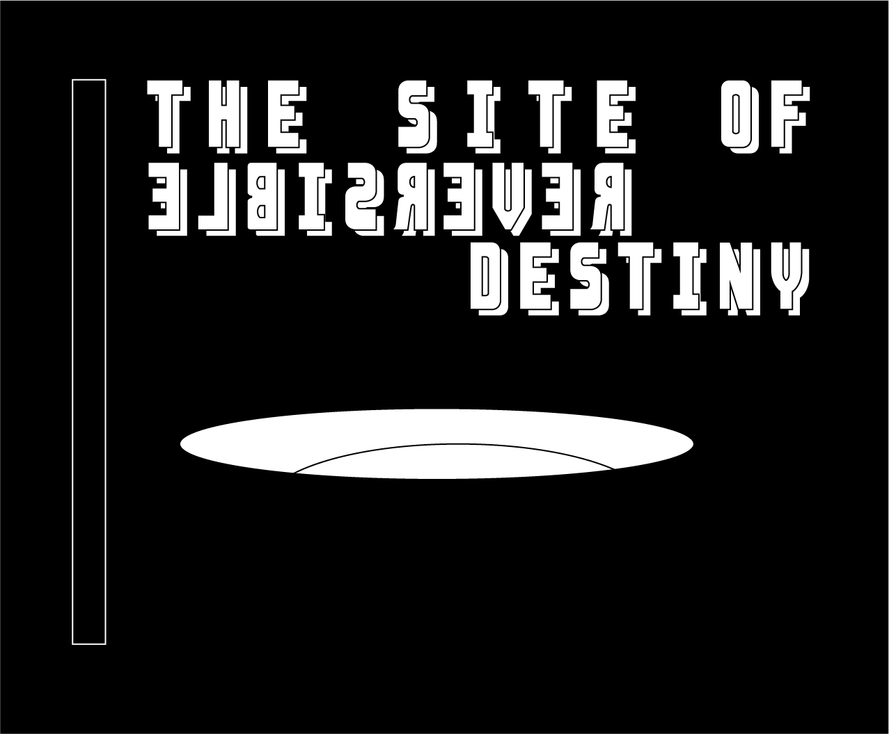

Inspired by a typographic relic in the town of Yoro, Gifu.

I think i'm in love.
After visiting the architectual wonderland that is 'The Site of Reversible Destiny'—tucked away in the hills of the little town of Yoro—I decided to poke around the streets before my old rattling red train arrived.

To my absolute delight I stumbled across this old Pachinko.
The found letters were used as a starting place. From those few letterforms I was able to extrapolate the remaining alphabet. The resulting display typeface is harsh yet quirky. Depending on usage it can evoke old industrial signpainted type, but also a groovy blocky disco. The fat bottomed 'S' oozes soul.
